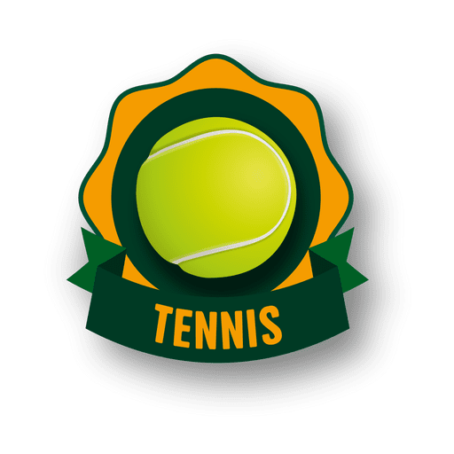
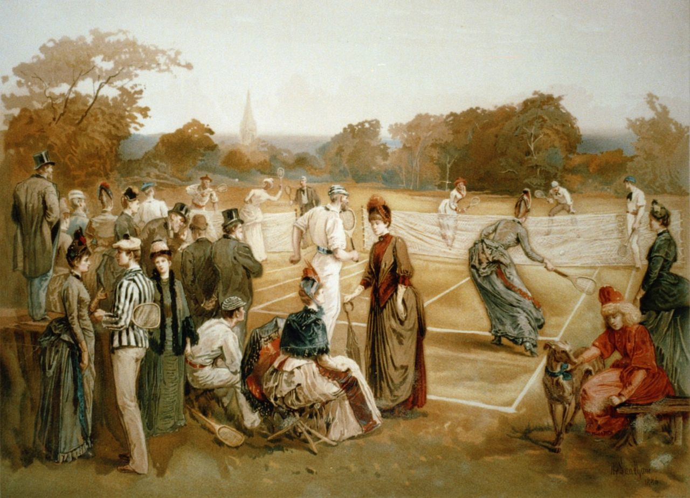
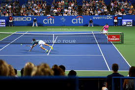

El tenis, también llamado tenis de campo, es un deporte de raqueta practicado sobre una pista rectangular (compuesta por distintas superficies las cuales pueden ser cemento, tierra, o césped), delimitada por líneas y dividida por una red. Se disputa entre dos jugadores (individuales) o entre dos parejas (dobles). El objetivo del juego es lanzar una pelota golpeándola con la raqueta de modo que rebote en la otra cancha pasando la red dentro de los límites permitidos del campo del rival, procurando que este no pueda devolverla para conseguir un segundo rebote en el suelo y por ende un punto.
Como se creo

Las primeras referencias del tenis tienen lugar en Francia, nombrado jeu de paume (‘juego de palmas’) dado que al principio se golpeaba la pelota con la mano. Más tarde se empezaron a utilizar raquetas.
El tenis original se jugaba en pistas de hierba natural.
Se originó en Europa a finales del siglo XVII y se expandió en un principio por los países angloparlantes, especialmente entre sus clases altas. En la actualidad el tenis se ha universalizado, y es jugado en casi todos los países del mundo. Desde 1926, con la creación del primer tour, es un deporte profesional. Es además un deporte olímpico desde los Juegos Olímpicos de Atenas 1896.
Reglas Tennis

• El partido de tenis comienza con el saque de uno de los jugadores.
• El jugador tiene 2 oportunidades de saque. Si falla la primera, tiene otra oportunidad de entrar la pelota.
• El jugador sólo puede golpear la pelota una vez por turno.
• El juego lleva una puntuación inusual: el primer punto se contabilizará como 15 puntos, el segundo como 30 puntos y el tercero como 40 puntos.
• Ganando cuatro puntos se consigue un juego, siempre que obtenga dos puntos de diferencia con el contrario; si se llega al 40-40 habrá que disputar otros dos puntos (ventaja-juego) y ganando 6 juegos —y dos juegos de diferencia— se consigue un set.
• El partido se gana con 2 sets o con 3 sets.